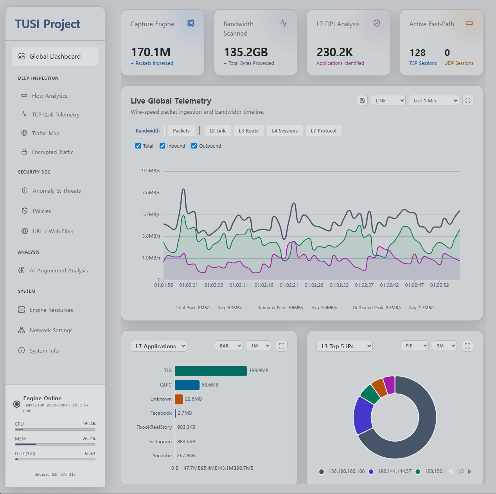
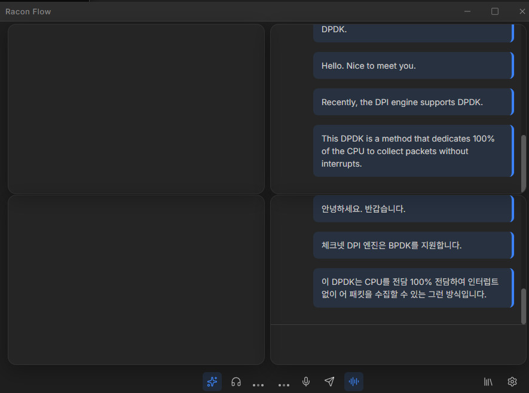
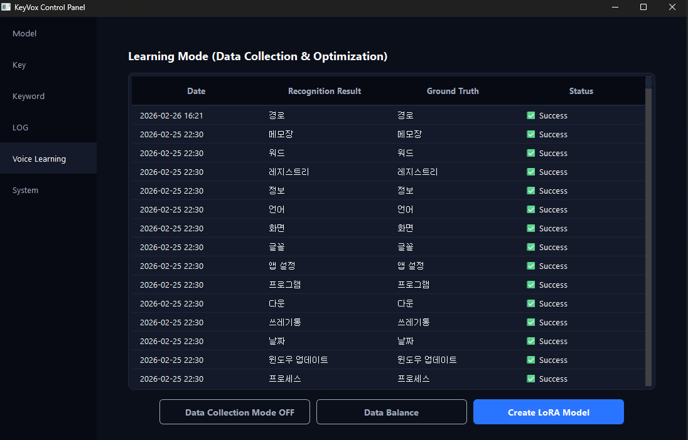

About
20년 이상 대규모 네트워크 인프라 비즈니스와 핵심 개발 프로젝트를 지휘해 왔습니다. 시간이 지날수록 전 세계의 모든 네트워크 트래픽은 강력하게 암호화되고 있으며, 이로 인해 인프라의 가시성(Visibility)은 급격히 상실되고 있습니다. 저는 잃어버린 가시성을 복원하고 암호화된 패킷 너머의 맥락을 읽어낼 수 있는 유일한 열쇠가 'AI'라고 확신하며, 이를 심층 패킷 분석(AI-DPI) 등에 적용하여 유의미한 결과물들을 도출하고 있습니다.
최신 AI 기술의 한계를 테스트하고, 이를 네트워크 분야뿐만 아니라 실생활의 문제를 해결하는 다양한 애플리케이션(RAG, STT/TTS)으로 직접 구현해 내는 과정에서 엔지니어로서의 깊은 즐거움을 느낍니다.
Core Tech Stack
- Kernel/Sys: Linux, C/C++
- Backend/AI: Go, Python
- Frontend: React, Vue.js
Projects
-
수천만 세션과 높은 PPS를 처리하는 차세대 고성능 DPI 엔진. 과거 드라이버 후킹과 Zero-copy 기반으로 직접 구현하던 패킷 수집 엔진을 현대적인 eBPF/DPDK 아키텍처로 재설계했습니다. 추출된 Low-level Feature Set 로그를 AI 머신러닝 모델에 실시간 공급합니다. 특히, ECH(Encrypted Client Hello)로 SNI가 완전 암호화된 환경에서도 패킷 크기와 도달 시간(IAT) 등 메타데이터만으로 YouTube 등 동영상 스트리밍과 일반 웹 트래픽을 정확히 식별하는 연구를 핵심 과제로 수행했습니다.
- eBPF/DPDK
- nDPI
- Machine-Learning
- QUIC/TLS 1.3
- ECH
More DetailLive Dashboard Open in new tab
-
클라우드 종속성 없이 동작하는 온디바이스 AI 동시통역 시스템입니다. 화상회의 등 실시간 서비스에 적용하기 위해, 경량화된 로컬 모델(Gemma 4-bit)을 기반으로 번역 품질과 응답 속도 간의 최적의 타협점을 찾아 실용적인 파이프라인을 구축했습니다. 특히 기존 OpenVoice V2 엔진의 한국어/일본어 운율 및 발음 왜곡 문제를 자체적으로 패치하여 고도화한 ROV-TTS 엔진을 탑재, 6개 국어 지원 및 화자 음성 복제(Voice Cloning)를 오프라인 환경에서 구현했습니다. 자체적인 RAG 파이프라인을 구축하여, 실시간 통역 시 사용자가 첨부한 문서나 전문 용어집 등의 도메인 지식을 즉각적으로 반영합니다. 게임이나 화상회의 화면 위에 띄울 수 있는 오버레이 UI를 함께 지원하는 독립형 윈도우 AI 애플리케이션입니다.
- Local-LLM(Gemma)
- ROV-TTS
- RAG
- Python
- Electron/Vue3
More DetailUI Screenshot
-
Push-to-Talk 방식의 STT 기반 음성 구동형 매크로/단축키 자동화 에이전트입니다. 지정된 단축키를 누른 상태에서 음성 명령(n-Gram)을 말하고 키를 떼면, 즉시 해당 OS 명령(예: '제어판' 실행)이 수행되도록 설계했습니다. 이 시스템은 극단적으로 빠른 인식 속도와 높은 정확도를 요구합니다. 이를 위해 Whisper 모델에 100여 개의 사전 정의된 커맨드셋을 미세조정(Fine-tuning)하여 전용 LoRA 모델을 구축했습니다. 도메인 한정적인 용도이므로 약간의 과적합(Overfitting)을 허용하는 대신, 99% 이상의 압도적인 인식률과 지연 없는 반응 속도를 얻어냈습니다. 특히 GPU 없이 적은 CPU 연산 리소스만으로 동작할 수 있도록 최적화하여, 실무 환경에서 매우 실용적으로 활용 가능한 파이프라인입니다.
- Python
- Whisper
- LoRA / Fine-tuning
- Automation
More DetailUI Screenshot
-
OpenVoice v2 프레임워크를 심층 개조한 고성능 텍스트-음성 변환 엔진입니다. 가벼운 리소스와 음성 복제(Voice Cloning) 기능이라는 원본의 장점은 유지하면서, 한국어와 일본어 파이프라인의 일부 결함들을 완전히 수정했습니다. 한국어 처리를 위해 g2pk 기반 정규화 엔진을 도입하고, 파이프라인 메모리에 O(1) 속도로 즉시 로드되는 13만 단어 규모의 IT 특화 사전을 구축하여 복합어와 영문 혼용 어휘의 발음 지연을 없앴습니다. 일본어 파이프라인에서는 원본 특유의 음향 뭉개짐 오류를 우회하는 적대적 스펠링(Adversarial Spelling) 정규식을 적용했습니다. 더 나아가, 윈도우 환경 설치 시 발생하던 파이썬 형태소 분석기 간의 네임스페이스 충돌을 fugashi 래퍼로 교체하여 원천 차단함으로써, 플랫폼 제약 없는 배포 아키텍처로 수정했습니다.
- Python
- Voice-Cloning
- NLP
- Fugashi / g2pk
-
Past Projects
Web Proxy (Cache)
- 스토리지 최적화 기반의 고성능 웹 프록시 캐시 엔진
- CDN 서비스용 동영상 미디어 캐시 시스템
- 4G(LTE) 기지국에 설치되는 모바일 엣지 캐시(Mobile Edge Cache)
DPI (Deep Packet Inspection)
- 네트워크 패킷 필터링을 위한 단방향 고성능 DPI 엔진
AI & Machine Learning
- 온라인 필기(Hand-written) 제스처 인식 엔진
- AI를 활용한 웹페이지 자동 카테고리 분류 데이터베이스 구축
Experience
Experience
-
2025 — Present Independent Developer독립적인 소프트웨어 개발에 집중하며, AI 기반 애플리케이션 개발, 고성능 최적화 및 시스템 아키텍처 설계에 주력하고 있습니다.
-
2022 — 2025 Tech Advisor · SecureWay Tech (UAE)Provided expert technical consulting on high-performance networking and AI technology implementations for overseas enterprises.
-
1999 — 2021 Founder & CEO · AraNetworks20년 이상 IT 벤처기업을 운영하며 기술 사업화를 총괄했습니다. 고성능 WebCache를 개발하여 스페인 Telefónica, 일본 NTT, 중국 Huawei, HP 등 글로벌 통신사 및 기업에 공급했습니다. 2000-2001년 미국 WebCache 벤치마크 SOTA 2회 달성, LTE 모바일망용 EdgeCache 등을 성공적으로 개발 및 납품했습니다.
Education
-
1990 — 1999 KAIST (Korea Advanced Institute of Science and Technology)
Ph.D. Coursework (Database Lab) & M.S. in Computer Science (AI Lab)
-
1986 — 1990 Korea University
B.S. in Computer Science